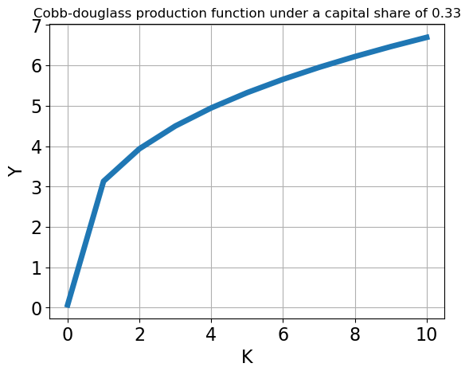

import numpy as np
import matplotlib.pyplot as plt
Lab 1
ECNM10115 Programming and Numerical Methods for Economics
Marking Scheme
- Code Functionality and Accuracy: The code meets the requirements and solves the problem as specified in the assignment.
- Code Structure and Organization: The code is clear, well-structured, and easy to understand. The code is code broken down into reusable functions or modules. Variables and functions are named appropriately for clarity and understanding.
- Documentation and Comments: Comments are used effectively to explain the code.
- Creativity and Problem Solving: The student uses creative approaches or algorithms to solve the problem.
- Adherence to Guidelines and Deadlines: The student follows the course guidelines, formatting requirements, and submission rules.
Tips for Presentation
- Be clear.
- Split your code in different cells.
- Explain the rationale of your code.
- Do not forget to add label and titles to your figure
- Use Tables if you need.
Example:
| Variable | Sample |
|---|---|
| Loan Amount (usd) | 10,010,043 |
| Interest Rate | 8,784,327 |
| Rate Spread | 8,010,722 |
| Loan Term (months) | 8,777,542 |
| Property Value | 8,788,656 |
Plan for today
- Move from Economic Formulas to Code
Tips for Exercise 1 of PS1 $$ Review the Python Refresher “Python Basics 9”
Tips for Exercise 2 of PS1 \(\rightarrow\) Review the Python Refresher “Python Basics 6” and “Python Basics 7”
Production Function
\[Y = F(K,L) = A \left(\alpha K^{\frac{\sigma-1}{\sigma}} +(1-\alpha)L^{\frac{\sigma-1}{\sigma}} \right)^{\frac{\sigma}{\sigma-1}} \]
When $ $,
\[Y = F(K,L) = A K^{\alpha} L^{1-\alpha} \]
Questions:
- What are the parameters and variables?
Parameters: * xxxx * xxxx
Variables: * xxxx * xxxx
Import Libraries
Let’s define the parameters
alpha = 0.33 ## capital share
sigma = 1.5 ## constant elasticity of substitution
A = 1.5 ## TFPLet’s define function
def ces_func(k,l,A=1.5,alpha=0.33,sigma=1.5):
if sigma==1:
print('function takes Cobb-Douglas form')
y = A*k**(alpha)*l**(1-alpha)
else:
y = A*(alpha*k**((sigma-1)/sigma) +(1-alpha)*l**((sigma-1)/sigma) )**(sigma/(sigma-1))
return yLet’s define an even space grid
k_grid = np.linspace(1e-5,10,11)array([1.000000e-05, 1.000009e+00, 2.000008e+00, 3.000007e+00,
4.000006e+00, 5.000005e+00, 6.000004e+00, 7.000003e+00,
8.000002e+00, 9.000001e+00, 1.000000e+01])Let’s compute the value of the function using the previous grid and l=3
y1_k = ces_func(k_grid,3,sigma=1)function takes Cobb-Douglas formLet’s explore the dimension of y1_k
np.shape(y1_k)(11,)Let’s draw a graph of the production function
fig, ax = plt.subplots()
ax.plot(k_grid, y1_k, linewidth=5.0)
ax.set_xlabel('K',fontsize=(16))
ax.set_ylabel('Y',fontsize=(16))
ax.set_title('Cobb-douglass production function under a capital share of 0.33')
ax.grid()
ax.tick_params(axis='y', labelsize=16)
ax.tick_params(axis='x', labelsize=16)
plt.show()
Tips to solve exercise 4
- Compute Steady State (some algebra)
- For each period of time you will have a level of capital in steady state and a level of output in steady state
- Use arrays to represent the capital and output paths
- Equation (1) will capture the negative shock to identify the new level of capital.
- Draw a flowchart before start coding.
Steady State Computation
# Parameter values
alpha=0.3
s = 0.4
A = 4
delta=0.7
# Steady State
k_s = (s*A/delta)**(1/(1-alpha))
y_s = A*k_s**(alpha)
Introducing a Shock
eps=0.5 # Tolerance parameter
t=0
k_path = [k_s,k_s,k_s]
y_path = [y_s,y_s,y_s]
k_old = k_s
A = A*0.75
params = s,A,alpha,delta
def law_of_motion(k,params):
s,A,alpha,delta=params
return s*A*k**alpha+(1-delta)*k